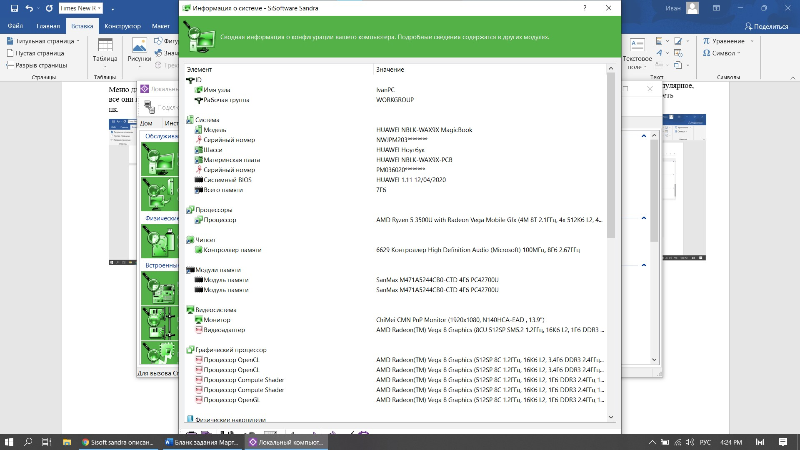

1 AIDA64 (3.80) |
|
AIDA64 — утилита FinalWire Ltd. для тестирования и идентификации компонентов
персонального компьютера под управлением операционных систем Windows, предоставляющая детальные сведения об аппаратном и программном обеспечении.
Является последовательницей утилиты Everest.
Установка программы состояла из всего 3х шагов: принятия настроек, выбора устанавливаемой версии и места куда все будет инсталлировано. |
| |
| Рис. 1 Первый шаг установки |
| Главное меню состоит иконок, которые переводят нас в индивидуальные меню для какой-либо из частей нашего пк: |
 |
| Рис. 2 Главное меню |
| Далее рассмотрим эти меню. Проверка состояния пк в общем – позволяет посмотреть общую информацию о машине.
Будь то информация об операционной системе или материнской плате, а также провести стресс тесты каждой части машины.
Можно провести проверку состояния батареи устройства, чтобы сделать для себя какие-нибудь выводы. |
| |
| Рис. 3 Главные функции |
| Рис. 4 – Показывает нам полную информацию о нашем устройстве. Показаны нам очень точные данные о компонентах системы и
ненужно открывать системный блок, что бы узнать из каких комплектующих состоит компьютер. |
 |
| Рис. 4 Информация о ПК |
 |
| Рис. 5 Вывод информации о батарее |
| Программа также позволяет просмотреть различные датчики на внутренних устройствах компьютера и отображает температуру,
напряжение, скорость вращения вентиляторов и потребление электроэнергии. Помимо прочего, эти данные могут отображаться
в иноке с системном трее, OSD-панеле, гаджете рабочего стола и на дисплее клавиатуры Logitech G15/G19. Значения датчиков
могут быть записаны в журнал или экспортированы во внешнее приложение (например, в RivaTuner и Samurai). Также AIDA64 может
сигнализировать о превышении допустимых значений и о создавшейся аварийной ситуации. |
 |
| Рис. 6 Данные сенсоров устройства |
| Вывод: Программа обновляется каждый год, потому информация об пк будет актуальной. Много функций для диагностики абсолютно
каждой части пк. Установка была удобной и быстрой, главное меню удобно в использовании. |
2 SiSoftware Sandra 2016.03.22.20 |
|
SiSoftware Sandra - это системный анализатор для 32-х и 64-битных версий Windows, включающий в себя тестовые и информационный модули. Sandra старается превзойти
другие подобные утилиты и показать реальную картину, объединяя в одной программе возможности для сравнения производительности как на высоком, так и на низком уровне.
Вы можете получить сведения о процессоре, чипсете, видеоадаптере, портах, принтерах, звуковой карте, памяти, сети, Windows, AGP, соединениях ODBC, USB2, Firewire, и
других. Также вы можете сохранять, распечатывать и отправлять по факсу и электронной почте, загружать на сервер или вставлять в базу данных ADO/ODBC отчеты в текстовом,
HTML, XML, SMS/DMI или RPT форматах. Данная версия поддерживает множество источников для сбора информации, в том числе: удаленные компьютеры, КПК, смартфоны, базы данных
ADO/ODBC или сохраненные отчеты. Все тесты оптимизированы как для SMP, так и для SMT (Hyper-Threading), поддерживая до 32/64 процессоров в зависимости от платформы.
Установка состоит из 6 шагов: Принятие лицензии, выбора места для инсталляции файлов, включение необходимых служб, выбора доп. Задач и ожидания распаковки файлов. |
 |
| Рис. 7 Первый шаг установки |
| Главное меню состоит из избранных нами модулей, тестов, сведений о системе. То есть мы можем сами себе персонализировать внешний вид программы. |
| |
| Рис. 8 Главное меню |
| Работа с пакетом Sandra не вызывает никаких трудностей. Запуская программу и перед нами, откроется окно, напоминающее Панель управления Windows, только с гораздо
большим количеством ярлыков. Каждый из них соответствует определенной утилите, "ответственной"за сбор информации о отдельное устройство, входящее в вашу систему,
с предоставлением данных о производителе, версию, дату изготовление, быстродействие и т.п. В верхней панели есть выбор способа отображения информации в окне, а
также фильтрации модулей в зависимости от их функциональности по группам. Некоторые группы приведены на рисунках ниже. |
 |
| Рис. 9 Меню инструментов |
| Меню для анализа системы при помощи нагрузки (тесты). Их очень много и все они настраиваемые. Мы можем продигнастировать всевозможные модули пк. |
 |
| Рис. 10 Меню тестов |
| Меню для рассмотрения информации о системе из данных пк. Тут можно вывести полную информацию о системе, подобрать наиболее популярное, стресс
устойчивое и совместимое железо для машины. Просмотреть информацию о каждом встроенном устройстве и периферии. |
| |
| Рис. 11 Меню устройств |
| Вывод информации о системе: |
|  |
| Рис. 12 Вывод информации о системе |
| Вывод: Установка программы была громоздкой, программа платная и стоит довольно много. При этом нет бесплатной версии. Интерфейс приятно
выглядит и в нем легко ориентироваться. Все функции распределены по группам, можно выбирать избранные функции. Из минусов – медленная загрузка информации. |
3 Ashampoo WinOptimizer19 |
| Ashampoo WinOptimizer — условно-бесплатная программа, точнее, пакет программ, для оптимизации операционной системы за счёт её
настройки и очистки, разработанная компанией Ashampoo. Работает на компьютерах под управлением ОС Microsoft Windows 7, 8, 10.
Установка производилась в 5 шагов: выбор типа установки, принятия лицензионного соглашения, выбор места инсталляции, выбор для
создания дополнительных ярлыков и наконец установка дополнительного обеспечения |
 |
| Рис. 13 Первый шаг установки |
| Главное меню выглядит запутанно, но нам сразу показывается состояние системы в виде датчика, а также видно, когда в последний раз
проводилась оптимизация пк. Увы все функции системы приведены не на главном окне,
а в меню слева. Но зато можно оптимизировать систему по заранее подготовленному шаблону. |
 |
| Рис. 14 Главное меню |
| Вкладка «Все модули» - как по мне, то очень удобный модуль. Можно сразу найти в списке нужную программу и нет необходимости лазить
по вкладкам и искать необходимую. Функции разделены на функциональные группы и приведены списком. |
| |
| Рис. 15 Модули программы |
| Все модули по группам также продублированы слева в меню. |
| Далее некоторые функции, например Вывод информации о системе. Она выводится не списком, а по встроенным устройствам нашей машины.
Можно выбрав устройство просматривать по вкладкам дополнительную информацию об устройстве. Где установлено, какие есть ошибки в работе,
сама информация о возможностях и прочее. |
 |
| Рис. 16 Вывод информации о системе |
| |
| Рис. 17 Вывод информации об ОС |
| Программа также позволяет произвести сохранение системы или же сделать backups. |
| Вывод: удобная установка, немного запутанный интерфейс, но некоторые функции для исправления и настройки системы под себя – это
перекрывают. Нет русского языка. Все функции можно посмотреть на одной вкладке – они все также будут разделены на группы. Информация
о системе выводится максимально быстро. |
|